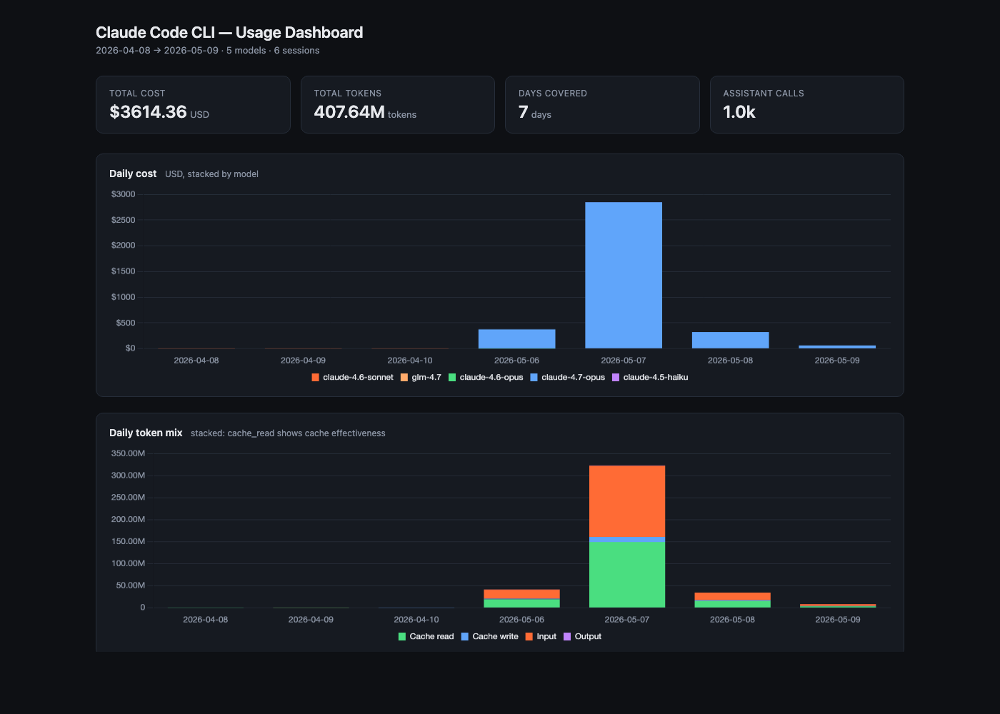
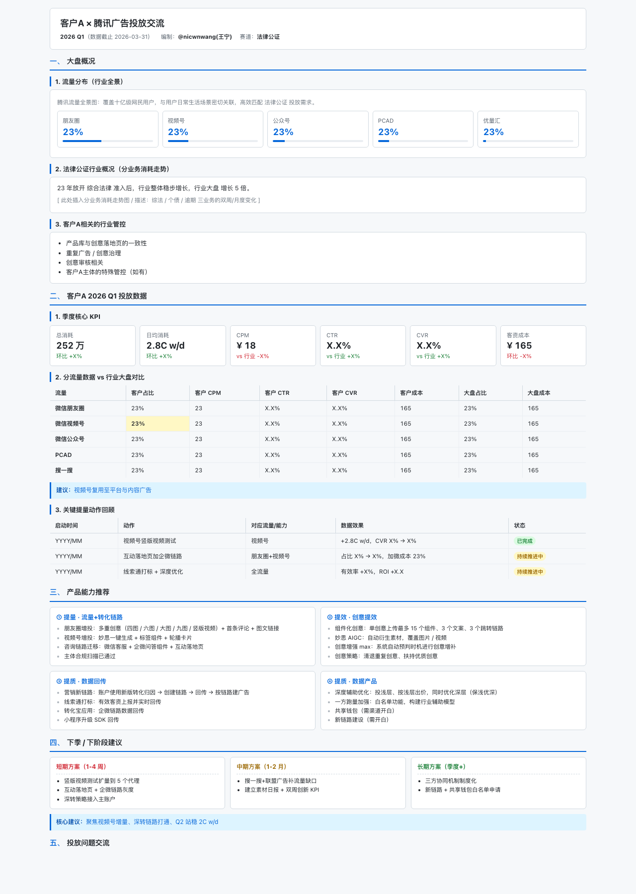
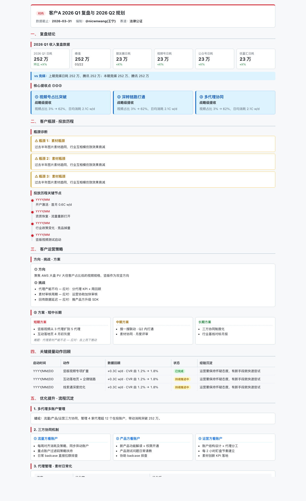

AI · For Business2026 W19商务服务行业内训
把 AI 当
同事用。
CodeBuddyClaude CodeWorkBuddy
三个 AI 同事 · 怎么用 · 怎么选 · 怎么落地
CodeBuddyClaude CodeWorkBuddy
三个 AI 同事 · 怎么用 · 怎么选 · 怎么落地
5 章 · 34 页 · 30-40 分钟 · 有 demo · 可截图带走
心智 · 三层架构 · 名词速查 · Claw 家族 · Harness/Hermes · MCP 协议 · 合规边界
CC / WorkBuddy / CodeBuddy 速览 + 4 个真实 demo · 横向对比 · 决策矩阵
Opus / Sonnet / Haiku 同事类比 · Context Window · 价格直觉 · 非 Anthropic 模型
AGENTS.md why+how · Skill / Hook 最小模板
5 条误解辟谣 · 场景速查 · 成长路径 Day 1 → Quarter 1
心智一旦切对，整套用法都顺了
先认人 · 再看名片 · 再判断它和你常用的工具是不是一类
动手实习生 · 终端 CLI
长期顾问 · 独立桌面 agent
身边小助理 · IDE 插件
| 维度 | CC · CLAUDE.md | CodeBuddy · User Rules + 项目文件 | WorkBuddy · 自动持续沉淀 |
|---|---|---|---|
| 怎么写 | 手动写 markdown，会话注入 | UI 设置里填规则 + 读项目内 .md | 对话中自动写 daily memory（agent 自管） |
| 维护成本 | 中 自己定期清理 | 低 设置一次半年不动 | 低 自动管理 |
| 记忆深度 | 会话级 + 项目级 | 项目级 + 全局偏好 | 跨日跨项目（最深） |
AGENTS.md（CC + CodeBuddy + Cursor 都吃）。
不要共用：WorkBuddy 的 daily memory 和 SOUL 人格——它是对话沉淀，强行喂给 CC 反而污染上下文。
建议：项目规则 → 一份 AGENTS.md 跨家共用；个人偏好 → CC 写 CLAUDE.md / CodeBuddy 写 User Rules（手动同步）；业务记忆 → WorkBuddy 独占。
所有 AI agent 都长一个样 · 名词听到不再蒙
市面 + 腾讯内部叫 Claw 的有 4 类 · 不在同一层 · 别混淆
| 名字 | 所在层 | 它是什么（专业版） | 大白话理解 |
|---|---|---|---|
| OpenClaw | 路由层 | 多模型路由网关 · 本机表现为 ~/.openclaw/ 服务进程 · 统一鉴权 + 模型分发 + 审批流 |
"水电管线" · 你不用直接和它说话 · 但所有 agent 都靠它接到模型 |
| Claw Code | 应用层 CLI | Claude Code 的开源衍生 / 二次封装 · npm 安装 · 可自部署 · 兼容 CC 的 hook/skill 机制 | "开源版 CC" · 给开发者用的可改可路由的 CLI · 业务同事一般不会直接接触 |
| WorkBuddy Claw | 应用层 Agent | WorkBuddy 桌面实例的品牌昵称 · 独立 agent 进程 · 自带 SOUL/IDENTITY/USER 人格 + 自动 daily memory | "长期顾问的英文名字" · 听到 "WorkBuddy Claw" = 听到 "WorkBuddy" |
| CodeBuddy 内的 Claw 标签 | 应用层插件特性 | CodeBuddy IDE 中标识"接入 OpenClaw 网关 / 走 Claw 模型组合"的能力开关 | "CodeBuddy 的一个开关" · 开了之后它走 OpenClaw 路由，不开就走默认 |
"Claw" 是腾讯内部围绕 AI agent 体系搭建的一套品牌前缀，含义偏向"敏捷的、能动手的助手"。但它指代的不是单个产品——而是整个生态的不同部件。
类比："水龙头"。OpenClaw 是水管总阀（路由）· Claw Code 是工厂里能拆能改的工业水龙头（CLI）· WorkBuddy Claw 是装在你家厨房的成品（桌面 agent）· CodeBuddy Claw 标签是水龙头开关上的一个挡位（插件特性）。
两个"业内热词" · 听过别蒙 · 看完知道在哪一层
不是产品 · 是一套 framing
套在 AI agent 外面那层管理框架——决定 agent 如何被约束、如何运转、如何交付结果。
| 工程 | 关注什么 |
|---|---|
| Prompt 工程 | 怎么"说" · 写好 instruction |
| Context 工程 | 给"什么" · 管理 context 内容 |
| Harness 工程 | 怎么"跑" · 编排 / 权限 / 多 agent / 反馈循环 |
Nous Research · 2026.02 开源 · MIT 协议
"会学习、会沉淀的自进化 agent"—— 被誉为 OpenClaw 的开源替代方案。
~/.hermes/，关机不丢，跨会话保留Model Context Protocol · Anthropic 2024 年开放 · 现已成业界事实标准
没有 MCP 之前，每个 agent 想接 Notion、GitHub、腾讯文档——都要 各自写一遍接入代码。100 个 agent × 100 个服务 = 10000 份重复实现。
业务同事的痛：CodeBuddy 接了 Notion · CC 没接 · 你只能在两个工具间复制粘贴。
MCP 定义了一套统一协议：服务方写一次 MCP Server，所有支持 MCP 的 agent 都能直接接。
什么能喂 AI · 什么不能 · 出事怎么办 —— 销售第一个会被问的问题
| 数据敏感度 | 建议路径 | 三同事选谁 | 风险 |
|---|---|---|---|
| 高敏（客户真名/金额） | 内网模型 · 必须脱敏后才上 | CodeBuddy（内网可控） | 高 |
| 中敏（脱敏案例/复盘） | OpenClaw 路由内部模型 | WorkBuddy 走 OpenClaw 内部线 / CodeBuddy | 中 |
| 低敏（公开资料 / 个人产出） | 任意模型均可 | CC / WB / CodeBuddy 都行 | 低 |
Anthropic 官方 CLI · 终端里的"动手干活"工程师
CLAUDE.md）"我需要在我电脑上动手做一件具体的事" —— 改代码 / 整理一批文件 / 跑脚本 / debug / 出 HTML 单页。
真实截图 · "本月用量 + 任务分布" 单页面板

~/.claude/usage.json，生成单页面板"从开口到出图，约 15 分钟。换我手写要 1 小时。
业务场景定制人格 · 自动跨日记忆 · "长期顾问"
需要"想得深、连得上、记得住"的活。复盘、季度规划、客户故事重组、跨多个项目找规律。
为什么 WorkBuddy 体感"懂你"——它每次会话自动注入这三份文件
人格 · 怎么说话 · 做事原则
名片 · 我是谁
用户档案 · 你是谁
三个文件分开写而不是合一，是为了"局部修改不影响整体"——比如你换工作只改 USER.md，性格不变。
~/.claude/CLAUDE.md 模拟一份，但需要手写 + 手维护 · CodeBuddy 用 IDE 的"用户规则"达到 70% 效果同一个客户 · 两个视角 · 同一份数据 · 不同呈现


同样是聊天式 AI · 但场景、记忆、节奏完全不同
| 维度 | CodeBuddy | WorkBuddy | 业务影响 |
|---|---|---|---|
| 场景 | 编辑器内 · 写文档/写报告中途随手问 | 独立桌面 · 专门"坐下来"和它聊事 | CB 适合工作流中插入 · WB 适合阶段性深聊 |
| 记忆深度 | 项目级（AGENTS.md）+ 全局偏好（User Rules）· 不自动累积 | 跨项目跨日 · 自动 daily memory · 三件套人格 | 同一个客户的连续 10 次复盘 · WB 记得住，CB 要每次喂背景 |
| 默认模型 | Sonnet（性价比） | Opus + 1M context（深思考） | CB 快但浅 · WB 慢但深 |
| 交互节奏 | 秒级响应 · 适合"问一句答一句" | 秒到几十秒 · 适合"想清楚再问" | CB 不打断流 · WB 鼓励暂停 |
| 扩展机制 | MCP 接外部服务（Notion/腾讯文档） | Skill 沉淀工作流（双周会/客户复盘） | CB 强在"接什么数据" · WB 强在"按什么流程做" |
不止补全 · 也不只是写代码
最入门用法
进阶用法
业务同事最实用
同一张表把"内置能力"和"外挂方式"全部说清
| 维度 | CodeBuddy | Claude Code (CC) | WorkBuddy |
|---|---|---|---|
| 载体 | IDE 插件 | 命令行 CLI | 独立 agent 实例 |
| 最强场景 | 编辑器内补全 / 解释 | 批量改文件 / git | 跨日策略 / 业务记忆 |
| 记忆能力 | 项目文件 + User Rules | CLAUDE.md 手动维护 | 自动持续沉淀（最强） |
| 能否跑 bash | 不直接 | 可以（核心能力） | 不擅长 |
| 公司合规 | 内网可控 | 视模型而定 | 视模型而定 |
| 速度 | 快（IDE 即时） | 中 | 较慢（深思考） |
| 成本 | 低 | 中 | 高 |
| 扩展机制 | MCP 协议接外部服务 | Skill + Hook | Skill + 长期记忆 |
机制：协议层接外部数据 · 装一次全 agent 受益
机制：SKILL.md 文档化工作流 · 一句话调用
4 维需求 × 利弊分析 · 比单一决策树更全面
| 任务特征 | 推荐工具 | 为什么 | 替代方案 + 利弊 |
|---|---|---|---|
| 📁 批量改文件 / git 操作 | CC | 能直接读写本地 + 跑 shell · 跨多文件批改最快 | CodeBuddy：可生成命令但要你自己跑 · WB：不擅长动手 |
| 📊 跨日策略 / 季度复盘 | WorkBuddy | 1M context + 自动记忆 · 记得住半年事 | CC：手写 CLAUDE.md 模拟 · 累 · CodeBuddy：项目级记忆够浅 |
| ⚡ IDE 内即时补全 | CodeBuddy | 原生 IDE 集成 · 秒级响应 · 不打断流 | Cursor：体验类似但非内网 · CC：要切到终端，太重 |
| 📝 业务文档单页报告 | CC 或 CodeBuddy | CC 能直接出 HTML + 起 server · CB 能边写文档边改 | WB：可以但贵 · 用它做"内容深度"，让 CC/CB 出"形式" |
| 🔐 涉敏感客户数据 | CodeBuddy | 内网可控 · 合规审批走通 · 默认走内部模型 | CC/WB：视模型而定 · 走 OpenClaw 内部模型 OK · 走 Claude API 不行 |
| 🔌 接 Notion / 腾讯文档 | CodeBuddy | MCP 生态最丰富 · 装一次复用 | Claude Desktop：装 MCP 也行但脱离 IDE · CC：可装但要 CLI 配置 |
| 🎯 反复做的工作流（双周会/复盘） | WorkBuddy | Skill 沉淀 · 一句话调用 · 自带历史口径 | CC：能写 skill 但不带业务记忆 · CB：可调用 skill 但不沉淀 |
| 💸 成本敏感批量任务 | CC + Haiku 模型 | 按量计费 · Haiku 极便宜 · 适合分类/格式化 | CB：默认 Sonnet 也便宜 · WB：默认 Opus 太贵不要 |
Claude 主流三档 · 选型不需要懂技术参数
高级顾问 · 最贵 · 最稳
资深员工 · 性价比最高
实习生 · 快 · 便宜
"AI 同事一次能装在脑子里的信息量" · 决定能跨多深的事
Context window = AI 桌上能摊开的资料量。摊不下的就放抽屉里，它看不到。
| 任务类型 | 建议模型 | 相对成本 |
|---|---|---|
| 分类 / 摘要 | Haiku | 1×（基准） |
| 日常写代码 | Sonnet | ~10× |
| 关键决策 | Opus（200K） | ~50× |
| 长期顾问 | Opus + 1M | ~100× |
GLM / DeepSeek / 混元 / GPT 都能进 · 但路径不一样
不是 README · 不是 CLAUDE.md · 不是 CodeBuddy User Rules · 是跨家共用的"项目身份证"
| 层级 | 位置 | 谁吃 | 写什么 |
|---|---|---|---|
| 全局偏好 | ~/.claude/CLAUDE.md + CodeBuddy User Rules | CC + CodeBuddy（手动同步） | 身份 / 语气 / 输出格式偏好 / 反模式 |
| 项目规则 | 项目根/AGENTS.md | CC + CodeBuddy + Cursor + Codex 共吃 | 项目身份 · 文件地图 · schema · 部署 · 反例 |
| 业务记忆 | ~/.workbuddy/memory/ | WorkBuddy 自动维护 | 对话沉淀 · 客户故事 · 决策历史（不要手写） |
球鞋站项目实例 · 88 行 / 6 个章节 / 三家 agent 共吃

每周双周会汇总 / 客户复盘 / 报告排版 · 都可以一句话触发
每个 Skill 一份 SKILL.md，描述触发词、流程步骤、踩坑备忘。
❌ 没 Skill 时：每次双周会都要重新解释"用什么格式、强调什么、跳过什么"——5 分钟过去了。
✅ 有 Skill 后：一句"双周会"或"客户复盘"，AI 自动加载规约、套模板、按口径输出 v0。
"AI 写完代码 → 自动跑测试" · "AI 写完 markdown → 自动同步到知识库"
Hook 用配置 JSON 写，CC 和 WorkBuddy 都支持。
Skill 解决"主动让 AI 做什么"，Hook 解决"AI 做完后自动做什么"。两者配合 → AI 真正接近"同事"——你给个起点，它自己跑完整条流水线。
复制即用 · 三步替换占位符 · 第二天就能用上
---
name: customer-email-draft
description: 客户邮件初稿生成器
triggers: ["写邮件", "回复客户", "邮件初稿"]
---
## When to use
当需要给客户写正式邮件（提案/跟进/异议回复）
且希望保持我个人的语气和落款风格时。
## Steps
1. 询问对方角色（决策人/执行层）+ 邮件目的
2. 套用我固定模板：开头问候 → 1 句价值 → 3 点正文 → 行动召唤
3. 用克制中性语气，不夸张
4. 落款固定 "nic"，不加 emoji
## Output format
- Markdown · 主题行 + 正文
- 长度 200-400 字
- 关键数据用粗体标注{
"hooks": [
{
"name": "auto-sync-daily-report",
"trigger": "PostWriteFile",
"match": "reports/daily/*.md",
"actions": [
"prettier --write {file}",
"tencent-docs upload {file} --space biweekly"
],
"on_failure": "notify"
}
]
}写完 reports/daily/*.md 自动跑 prettier 格式化 + 推到腾讯文档"双周会"空间。再也不用手动同步。
customer-email-draft 改成你的场景名 · ② triggers 改成你会说的中文触发词 · ③ Steps 写成你的实际工作流。Hook 同理：改 match 匹配你的文件路径，改 actions 写要跑什么命令。现场可问可答 · 截图发群保存
四阶段曲线 · 不要跳级 · 上一阶段没跑通别上下一级
投入 30 分钟
投入 2-3 小时
投入 半天 / 周
已成日常
把 AI 当同事用 · 从今天开始
第一周用一次 · 第二周用三次 · 第三周离不开